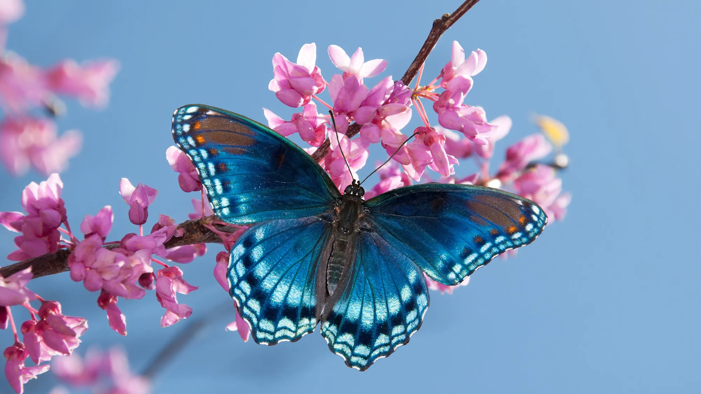
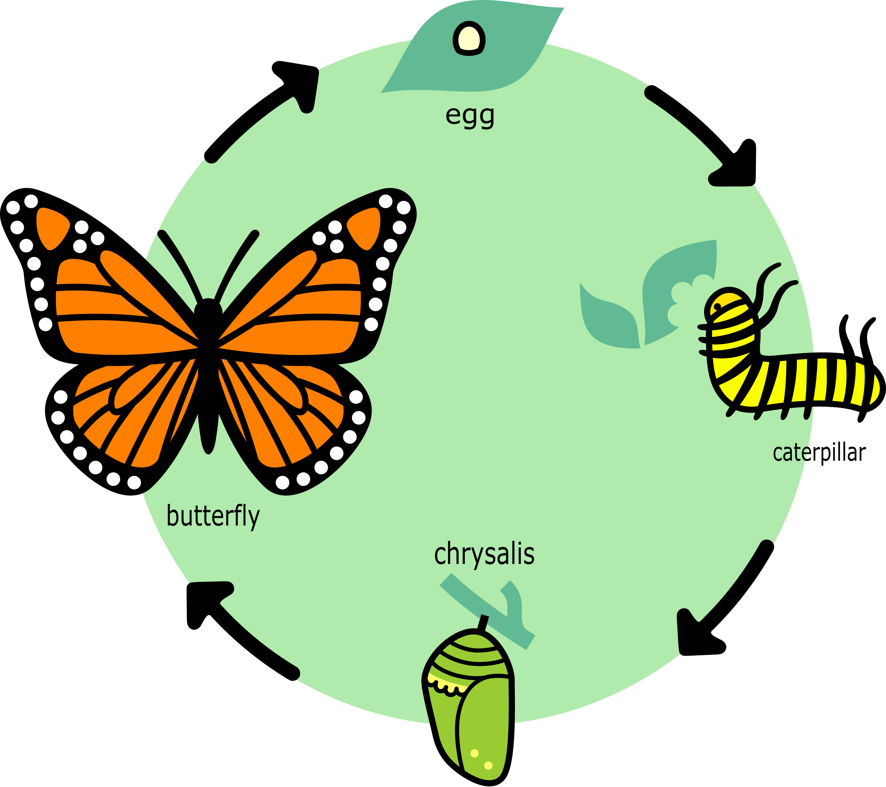

Welcome to
Wings and Wonder
Discover the beauty, science, and magic of butterflies.
Wings of Wonder is your guide to understanding these extraordinary insects—from how they grow to the dazzling families they belong to. Whether you're a curious learner, a teacher, or just someone who loves nature, you’ll find engaging information that brings butterflies to life.

